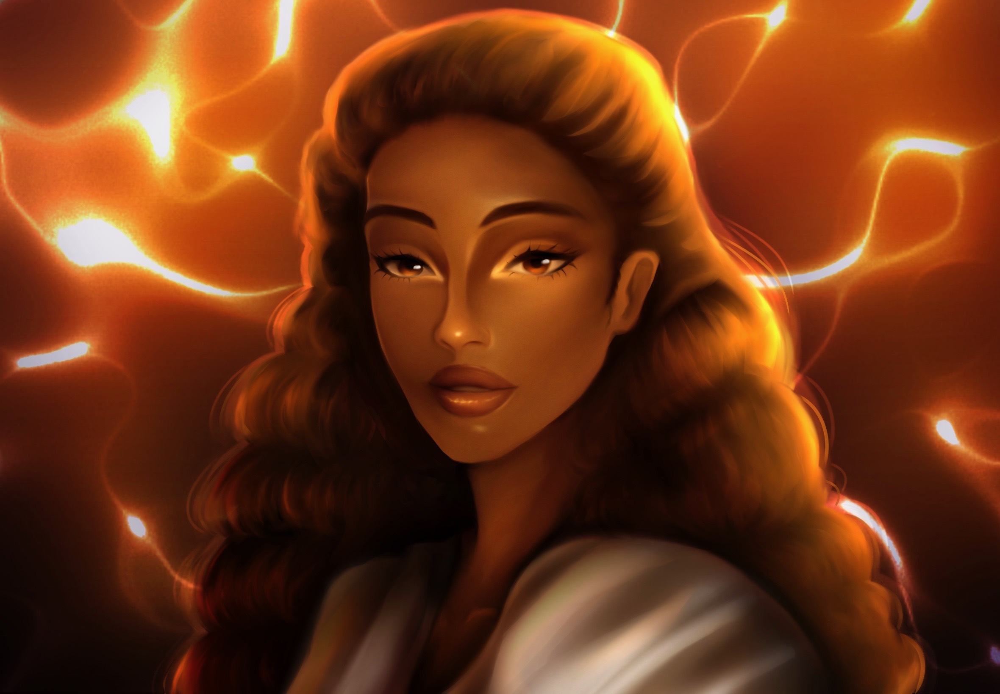
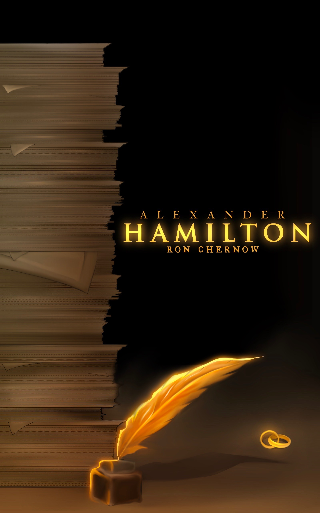
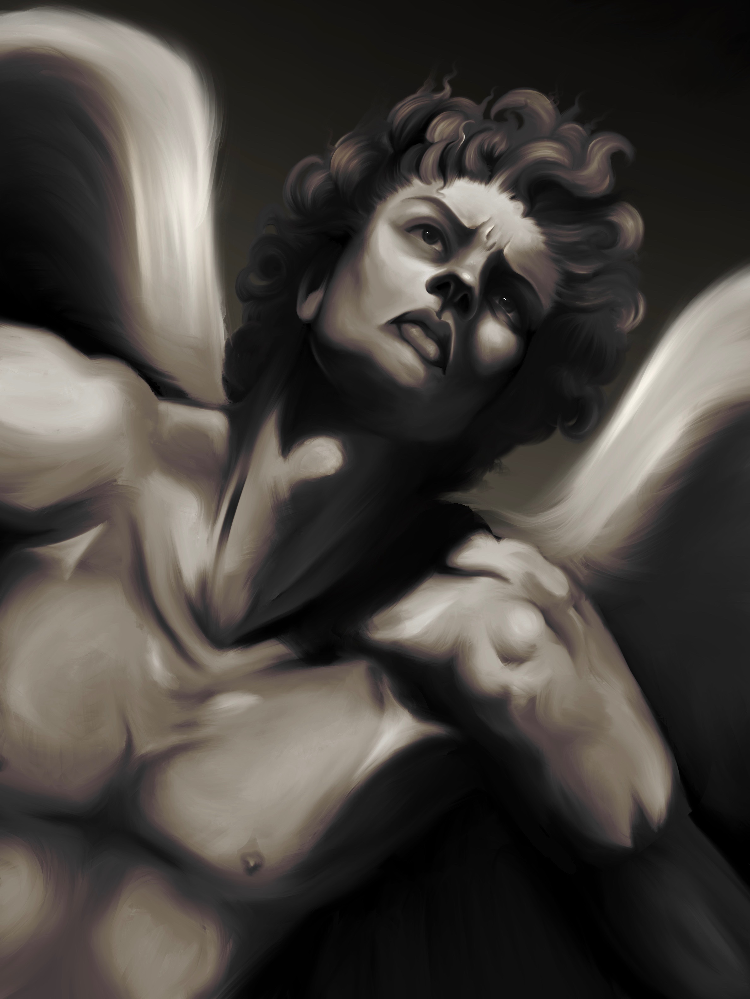
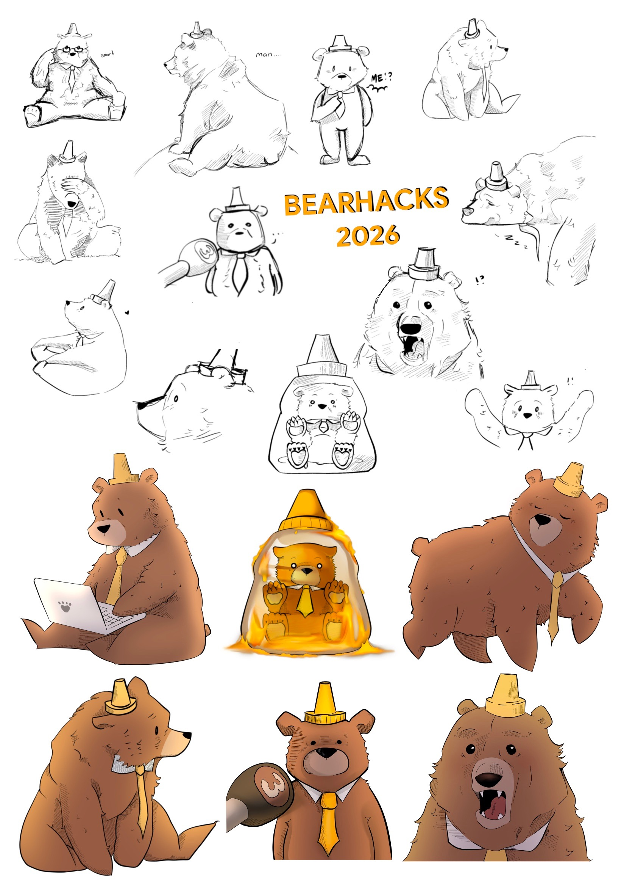
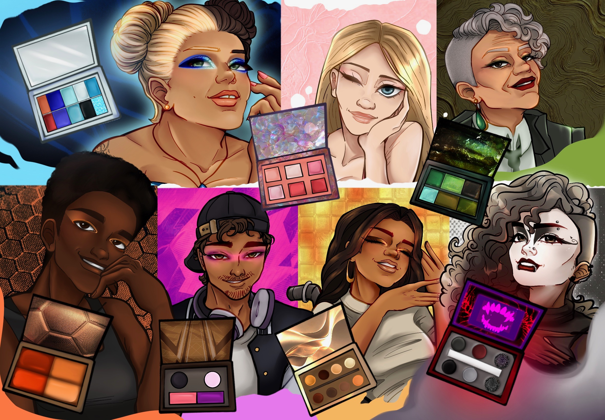
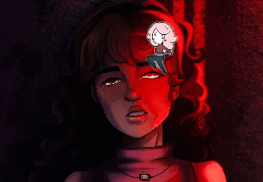

⚚ | Illustration
Before Interaction Design, I was an illustrator. I experiment where I can, creating characters, practicing anatomy and lighting, and visualizing written stories in comic-formats. It is my dream to write a comic one day.
I have an idea!
What's this? A gallery of my artwork! Feel free to stay as long as you wish ♡

Touched by Helios
Helios [Ἥλιος] had existed since the dawn of creation, when the
world was yet in its infancy. A god of divine majesty
and justice, whose heart had fallen captive to a mortal.
A woman with a life destined to
perish beneath the demands of Kronos.
Though Helios could illuminate the darkest corners of
Earth, he could neither command Kronos to halt time nor
beseech him to spare her fate.
Thus, he bestowed a solemn vow: so long as his golden
chariot traversed the heavens, she would never be forsaken,
nor deprived of his devotion.
And so, with each setting sun, he adorned the heavens
in gold and amber, that the dying light might
testify to his love for the one whom time had
taken from him.

Alexander Hamilton: Ron Chernow
Beside my dearest Hamilton, I held belief that his ambitions were
ours to share.
Yet to preserve his honour before the world, he had
sacrificed mine. His affairs became public by his own word,
while I was left to endure the indignity of
an Icarus who had flown too close to the sun.
How I had cherished the rings that bound us, as emblems of
eternity. For they are now reminders.
For when death claimed him, grief
had not extinguished my devotion. What cruel fate
should leave a woman to hold the memory of the
man whom he had wounded? For my final words,
I could only lament...
“I am so tired. It is so long. I want to see my Hamilton.”

Lucifer has Fallen
How the oppressor has come to an end! How his fury has ended! The Lord has broken the rod of the wicked, the scepter of the rulers, which in anger struck down peoples with unceasing blows, and in fury subdued nations with relentless aggression. All the lands are at rest and at peace. The realm of the dead below is all astir to meet you at your coming; it rouses the spirits of the departed to greet you— all those who were leaders in the world; it makes them rise from their thrones— all those who were kings over the nations. They will all respond, they will say to you, “You also have become weak, as we are; you have become like us.” Maggots are spread out beneath you and worms cover you. How you have fallen from heaven, morning star, son of the dawn! You have been cast down to the earth, you who once laid low the nations! You said in your heart, “I will ascend to the heavens; I will raise my throne above the stars of God; I will sit enthroned on the mount of assembly, on the utmost heights of Mount Zaphon. I will ascend above the tops of the clouds; I will make myself like the Most High.” But you are brought down to the realm of the dead, to the depths of the pit. Those who see you stare at you, they ponder your fate: “Is this the man who shook the earth and made kingdoms tremble, the man who made the world a wilderness, who overthrew its cities and would not let his captives go home?” To this, the Lord Almighty declares “I will rise up against them”(Isaiah 14: 5-22).

Bearhacks Mascot Iterations
Here is a collection of design explorations
created for BearHacks 2026.
I started with simple
sketches and tried experimenting with different
styles, this was my first time developing a
mascot. Through multiple iterations
and feedback, I helped to create this mascots
personality for the BearHacks brands.
The final concepts contain all types of
gestures, and warm hues.
This is how I
approach character development, I don't commit
to early ideations and ask for feedback
to create refined pieces.

Makeup Palette Design
For my third year Narrative for IxD
assignment, I created multiple gender-neutral makeup
palettes to demonstrate self-expression.
I was planning to create nude palettes
but I ended up rejecting this idea. Each character has
distinct personalities and their designs
reflects this.
Their makeup styles,
tell the stories of how they
feel most comfortable.
This activity allowed me to
experiment with diverse character design, colour theory, and
product iterations, I was excited to show the
diversity of the makeup industry.

Daisy
"I had sought out an angel,
Only to have found you,
The bane of my existence,
The Devil,
'Till death do us part, lucifer."